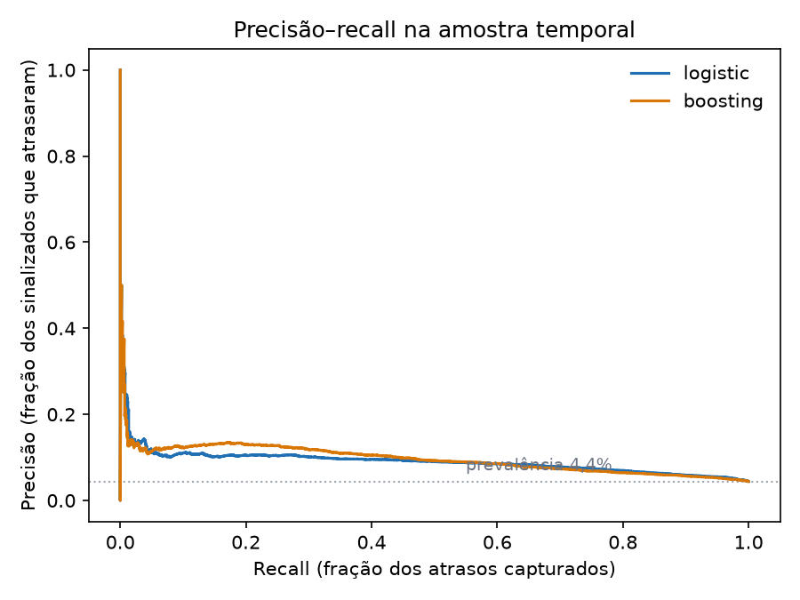
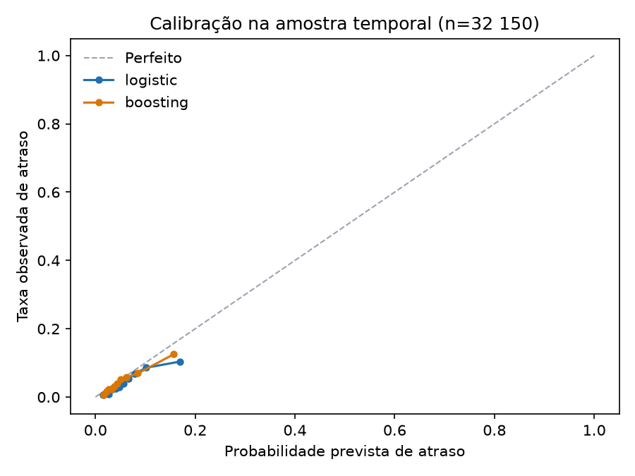

02 · Modelo de atraso na entrega
O que se sabe no checkout, e o que só parece previsível depois
Este é o segundo projeto sobre o conjunto de dados de e-commerce brasileiro da Olist. O primeiro mostrou que o atraso na entrega é o sinal mais forte de insatisfação do cliente no marketplace e que o atraso se concentra na rota São Paulo → Rio. Este projeto faz a pergunta voltada para a frente: no momento em que o pedido é feito, é possível ordenar os pedidos pelo risco de chegar atrasado?
Todo número abaixo vem de projects/02-late-delivery, treinado sobre o mart dbt mart_order_features. O modelo treinado não é versionado; as métricas e figuras são, e uv run python tasks.py train as reconstrói.
Resumo executivo
- O ranking tem sinal, mas é moderado e instável entre períodos. Em uma amostra temporal de 32.150 pedidos entregues, o modelo logístico selecionado alcança ROC AUC 0,708 (intervalo bootstrap de 95%: 0,695–0,722) e precisão média 0,091 (0,083–0,100) contra uma taxa de atraso de 4,42%. Sinalizar os 10% de maior risco captura 23,5% dos atrasos com precisão de 10,4% — 2,35× a taxa base.
- A classe do modelo não está decidida por esta evidência. A regressão logística venceu um período interno de validação por precisão média, mas o gradient boosting foi levemente melhor na amostra final (precisão média 0,103 contra 0,091; recall no decil superior 28,6% contra 23,5%). A diferença é pequena e uma única amostra temporal não estabelece um ranking confiável entre os dois. O relatório mostra ambos em vez de declarar um vencedor a partir do teste.
- O score é uma fila de triagem, não uma probabilidade. A taxa de atraso da amostra é 4,42%, enquanto a previsão média do modelo selecionado é 6,38%. A inclinação de calibração é próxima de um (1,02), mas o intercepto é −0,35 na escala logit: o modelo ordena razoavelmente e superestima o nível. Uma probabilidade em produção precisaria ser recalibrada com pedidos recentes e maduros.
- Prazo e geografia dominam. A importância por permutação coloca
promise_daysem primeiro lugar, seguido decustomer_stateeseller_state. Valor, frete, peso, pagamento e categoria acrescentam pouco depois disso. - O resultado não é uma alavanca causal.
promise_daysé a própria expectativa do marketplace sobre a dificuldade. Encurtá-lo não reduziria o atraso mecanicamente; a pergunta operacional do Projeto 01 sobre o corredor São Paulo → Rio continua sendo a causal.
1. O contrato de atributos
O modelo só pode usar informação que existe quando o pedido é feito. Isso é garantido por uma lista explícita de atributos permitidos em projects/02-late-delivery/src/late_delivery/features.py, e não por descartar algumas colunas óbvias: uma nova coluna do mart falha fechada até alguém adicioná-la de propósito.
| Grupo | Atributos |
|---|---|
| Momento da compra | mês, dia da semana, hora, indicador de fim de semana |
| O prazo | promise_days (data prometida − data da compra) |
| Geografia | estado do cliente, estado do vendedor, indicador de mesmo estado |
| Composição do pedido | categoria, número de itens / produtos / vendedores, valor dos itens, frete, valor do pedido, participação do frete, peso, volume, fotos, dimensões ausentes |
| Pagamento | número de pagamentos, máximo de parcelas, indicadores de cartão / boleto / voucher |
Ficam de fora, deliberadamente: horário de aprovação, entrega à transportadora, data de entrega, duração da entrega, dias de atraso, o próprio rótulo, a nota da avaliação e o status do pedido. Todos são observados depois do checkout. O tempo de chegada preveria o atraso quase perfeitamente, e é exatamente por isso que incluí-lo tornaria o resultado inútil como previsão e impossível de usar no momento da decisão.
order_status e delivered_to_customer_at existem no mart apenas para decidir se o rótulo de treino era observável no corte. Eles são proibidos na matriz de atributos, e um teste unitário garante isso.
Duas consequências aparecem no mart. seller_state é nulo em 1.285 pedidos com mais de um vendedor, porque um pedido multi-vendedor não tem uma origem única; same_state é nulo nas mesmas linhas. Ambos são imputados dentro do pipeline, não adivinhados. Para pedidos com várias categorias, o mart mantém a categoria mais frequente e desempata alfabeticamente.
2. Desenho da avaliação
Alvo: is_late, definido no Projeto 01 como a data de entrega estritamente posterior à data prometida. Pedidos sem data de entrega observada não têm rótulo e ficam de fora. Isso não é o mesmo que “nunca entregue”: os 2.965 pedidos excluídos estão majoritariamente em trânsito ou cancelados no fim do conjunto (1.107 enviados, 619 cancelados, 609 indisponíveis, 314 faturados, 301 em processamento, 8 entregues com data incompleta e alguns status anteriores).
Divisão: compras antes de 2018-04-01 formam o período de treino; compras a partir dessa data formam o teste (32.150 pedidos, 4,42% atrasados). Uma divisão aleatória colocaria os mesmos meses dos dois lados e deixaria o modelo aprender um backlog específico em vez de um padrão.
Maturação do rótulo: um pedido de treino precisa ter sido comprado e entregue antes do corte. Sem essa regra, 3.852 pedidos comprados antes de abril mas entregues depois contribuiriam com rótulos que não existiam na data de implantação. O conjunto de treino maduro tem 60.474 pedidos e taxa de atraso de 5,97%.
Seleção de modelo: origem móvel. Em 2017-07-01, 2017-10-01 e 2018-01-01, cada modelo é ajustado com rótulos maduros antes da origem e avaliado nos três meses seguintes. O rótulo de teste precisa ter amadurecido até três meses depois do horizonte, para que um pedido que chega atrasado não seja silenciosamente excluído da avaliação. A precisão média nas três origens seleciona a regressão logística (0,138 contra 0,102 do boosting). Um período interno único de validação (ajuste antes de 2018-01, validação em janeiro–março de 2018, 16.783 pedidos, 6,91% atrasados) continua reportado apenas para descrição; não é o critério de seleção. O modelo selecionado é reajustado em todo o treino maduro e avaliado uma única vez na amostra de abril–agosto. Os dois modelos são reportados no teste como checagem de sensibilidade, não para re-selecionar.
Métricas: ROC AUC e precisão média para ranking; Brier e resumo de calibração para probabilidades; precisão, recall e lift em capacidades de 5%, 10% e 20% de revisão. A taxa base é 4,42%, então acurácia é inútil aqui — prever “não atrasado” para todo pedido acerta 95,6%.
3. Resultados
| Modelo | ROC AUC | Precisão média | Brier | Precisão topo 10% | Recall topo 10% | Lift |
|---|---|---|---|---|---|---|
| Regressão logística (selecionada) | 0,708 | 0,091 | 0,0420 | 10,4% | 23,5% | 2,35× |
| Gradient boosting | 0,708 | 0,103 | 0,0413 | 12,6% | 28,6% | 2,86× |
| Constante (prevalência de treino) | — | — | 0,0425 | — | — | — |
| Taxa por estado do cliente | — | — | 0,0427 | 5,1% | 11,6% | 1,16× |
Um score constante não ordena, então não tem métricas de decil superior com sentido; a versão anterior reportava uma fatia arbitrária de um empate, o que fazia a baseline parecer melhor do que era. O Brier continua válido como verificação do nível da probabilidade.
Os dois modelos são próximos em AUC, mas a diferença pareada em precisão média é real dentro desta amostra: o boosting é melhor no topo da fila. A regressão logística é mais fácil de interpretar e venceu a comparação com origem móvel sem olhar o teste de abril–agosto. Essa discordância é o resultado honesto: uma equipe de produção deveria tratar a classe do modelo como uma escolha aberta e decidi-la com uma avaliação móvel mais longa, não com este único período.

Capacidade de revisão
| Capacidade | Pedidos revisados | Atrasos encontrados | Precisão | Recall | Lift |
|---|---|---|---|---|---|
| 5% | 1.608 | 174 | 10,8% | 12,2% | 2,45× |
| 10% | 3.215 | 334 | 10,4% | 23,5% | 2,35× |
| 20% | 6.430 | 610 | 9,5% | 42,9% | 2,15× |
A fila degrada de forma suave: dobrar o orçamento de 10% para 20% encontra mais 276 atrasos, mas a precisão cai de 10,4% para 9,5%. A capacidade certa é uma decisão de custo que o conjunto não permite tomar.
Intervalos bootstrap (500 reamostragens) colocam o ponto de 10% em 9,4–11,5% de precisão, 21,5–25,6% de recall e 2,15–2,56× de lift. Esses intervalos descrevem o ruído amostral dentro desta amostra; não cobrem a mudança de regime entre períodos.
4. Calibração, e por que a probabilidade não é o produto

A taxa de atraso da amostra é 4,42%; o modelo selecionado prevê 6,38% em média. Uma recalibração logística ajustada na amostra dá intercepto −0,35 e inclinação 1,02 (escala logit). A inclinação diz que o ranking está aproximadamente certo; o intercepto diz que o nível está alto demais. É exatamente o que um modelo treinado com 5,97% de atraso faz quando o período seguinte roda a 4,42%.
A leitura prática: o score é um ranking, não uma probabilidade. Uma equipe pode usar “os 3.000 pedidos de maior risco neste mês” sem acreditar no percentual de um pedido individual. Se uma probabilidade for necessária para uma decisão voltada ao cliente, ela precisa ser recalibrada com pedidos entregues recentes e monitorada conforme o regime muda. A versão anterior desta análise afirmava que o modelo estava muito descalibrado; depois de corrigir o vazamento de maturação do rótulo, a inclinação fica próxima de um e o Brier é levemente melhor que uma constante. A diferença de nível permanece, mas é menor do que parecia.
5. Estabilidade ao longo do tempo
Uma única amostra pode esconder o quanto o resultado depende do período. A abertura mensal mostra variação real:
| Mês da compra | Pedidos | Taxa de atraso | ROC AUC | Precisão média | Recall topo 10% |
|---|---|---|---|---|---|
| 2018-04 | 6.798 | 4,50% | 0,780 | 0,153 | 41,8% |
| 2018-05 | 6.749 | 6,56% | 0,690 | 0,130 | 26,9% |
| 2018-06 | 6.096 | 1,16% | 0,790 | 0,056 | 35,2% |
| 2018-07 | 6.156 | 3,38% | 0,638 | 0,067 | 18,3% |
| 2018-08 | 6.351 | 6,19% | 0,611 | 0,087 | 11,7% |
A precisão média acompanha a taxa de atraso: junho parece fraco em parte porque havia quase nada para encontrar. O padrão mais preocupante é julho–agosto, quando a AUC cai para 0,61–0,64 e o decil superior captura apenas 12–18% dos atrasos.
A avaliação com origem móvel conta a mesma história em uma janela maior. Em cada origem o modelo é treinado apenas com rótulos maduros antes daquela data e avaliado nos três meses seguintes:
| Origem | Pedidos de treino | Pedidos de teste | Taxa de atraso no teste | ROC AUC | Precisão média | Recall topo 10% |
|---|---|---|---|---|---|---|
| 2017-07 | 13.111 | 12.214 | 3,37% | 0,614 | 0,059 | 20,1% |
| 2017-10 | 24.833 | 17.272 | 8,66% | 0,586 | 0,110 | 14,2% |
| 2018-01 | 41.202 | 20.624 | 12,87% | 0,674 | 0,245 | 25,0% |
O ranking é positivo em todas as janelas, mas varia de fraco (AUC 0,59) a útil (AUC 0,67). Essas populações de teste exigem rótulos maduros até três meses após o horizonte, então não são idênticas à amostra de manchete. Essa é a incerteza honesta em torno de um número de manchete, e argumenta por monitoramento em vez de uma alegação única de implantação.
6. O que o modelo está usando
A importância por permutação embaralha um atributo bruto por vez e mede a queda na precisão média na amostra de teste. Embaralhar no nível do atributo bruto mantém uma variável categórica como um conceito, em vez das dezenas de colunas one-hot que ela vira dentro do pipeline.
| Atributo | Queda na precisão média |
|---|---|
promise_days |
0,033 |
customer_state |
0,021 |
seller_state |
0,005 |
same_state |
0,003 |
seller_count |
0,001 |
items_value |
0,001 |
freight_share |
0,001 |
avg_photos_qty |
0,001 |
A lista é curta e coincide com a conclusão do Projeto 01. O prazo é o insumo mais forte, e a geografia carrega quase todo o resto. Valor da cesta, frete, peso, forma de pagamento e categoria acrescentam quase nada depois disso. Categoria e mês da compra têm quedas levemente negativas, o que significa que embaralhá-los não prejudicou esta amostra; eles não carregam sinal aqui.
Isso não significa “aumente o prazo e o atraso desaparece”. O Projeto 01 mostrou que o prazo é definido por rota e é mais curto no corredor São Paulo → Rio do que em rotas mais longas; promise_days é em parte a própria expectativa do marketplace sobre a dificuldade. O modelo explora essa expectativa, não identifica uma alavanca que possa ser mudada de forma independente. A pergunta causal continua sendo a operacional do Projeto 01: por que a travessia demora tanto.
7. Limitações
- Uma amostra, e um regime em movimento. O período de teste contém o backlog de fevereiro/março de 2018 e a melhora abrupta depois dele. Os resultados mensais e de origem móvel mostram AUC de 0,59 a 0,67. As populações de origem móvel são subconjuntos com rótulos maduros, não idênticos à amostra de manchete. Uma decisão de produção precisa de uma avaliação móvel mais longa, não desta única divisão.
- Os pedidos excluídos não são uma amostra aleatória. 2.965 pedidos não têm rótulo de atraso observável. A maioria está em trânsito ou cancelada no fim do conjunto. O modelo é avaliado em pedidos entregues, então não diz nada sobre se um pedido cancelado teria atrasado.
- Sem identificador de transportadora ou armazém. O conjunto para no vendedor e no estado. A causa operacional mais plausível do atraso, portanto, não está no modelo.
- O rótulo é a promessa, não a expectativa do cliente. Um pedido pode estar “atrasado” contra uma promessa agressiva e ainda chegar quando o cliente esperava. O Projeto 01 mostra que a diferença de avaliação é real, mas o rótulo herda a definição da promessa.
- Pedidos multi-vendedor perdem a origem. 1.285 pedidos não têm um estado de vendedor único. A imputação os mantém na avaliação, mas enfraquece a geografia nessas linhas.
- A importância é associacional. Embaralhar
promise_daysquebra sua correlação com a dificuldade da rota, então a queda não é o efeito causal de mudar o prazo. - Sem modelo de custo. O conjunto não tem custo de intervenção, valor de reembolso ou margem. A abordagem por capacidade evita inventar um; uma implantação real escolheria a capacidade comparando o custo de revisar um pedido com o custo de um atraso.
- Sem implantação nem monitoramento. Esta é uma avaliação offline. Um score em produção precisaria de checagem de deriva na taxa de atraso, na distribuição de prazos e na composição de estados, além de recalibração.
8. Reprodução
uv run python tasks.py db-up
uv run python tasks.py data
uv run python tasks.py load
uv run python tasks.py dbt-build
uv run python tasks.py traintrain grava projects/02-late-delivery/reports/model_metrics.json, a tabela de importância por permutação e as duas figuras acima. O contrato de atributos, divisão, seleção e avaliação têm testes em projects/02-late-delivery/tests/test_modeling.py, incluindo checagens de que nenhuma coluna proibida pós-compra entra na lista e de que rótulos em trânsito ficam fora do treino.